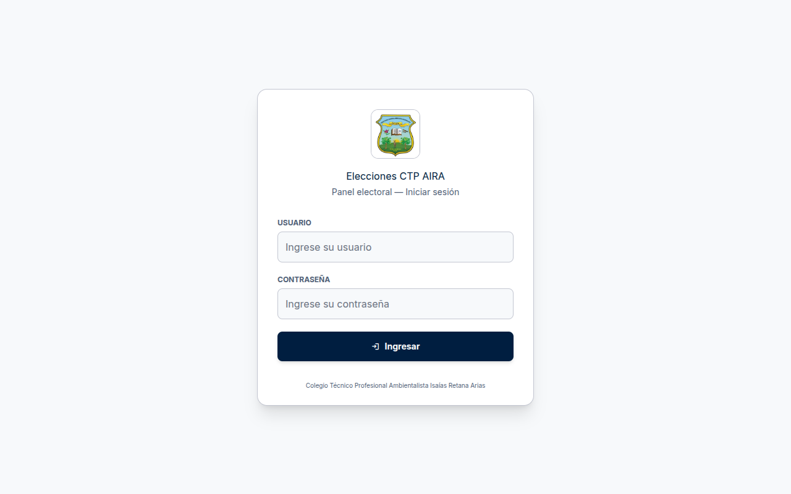
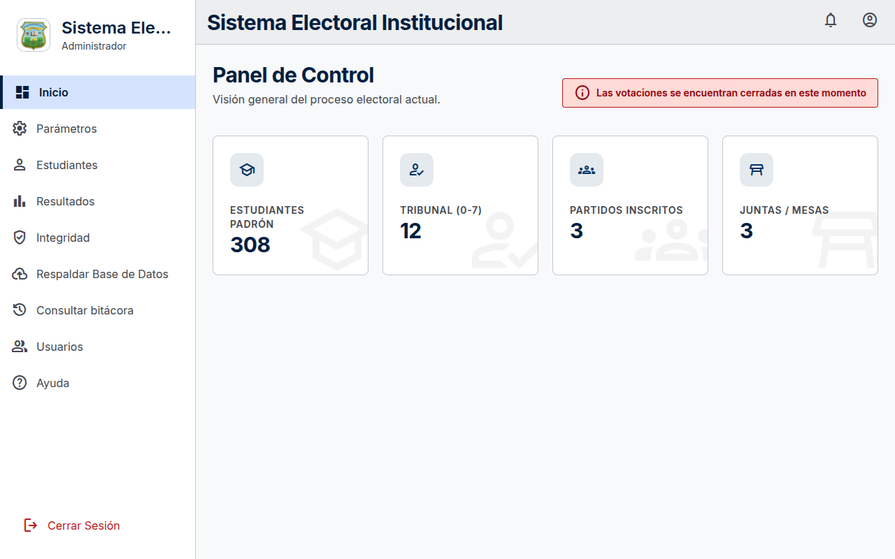
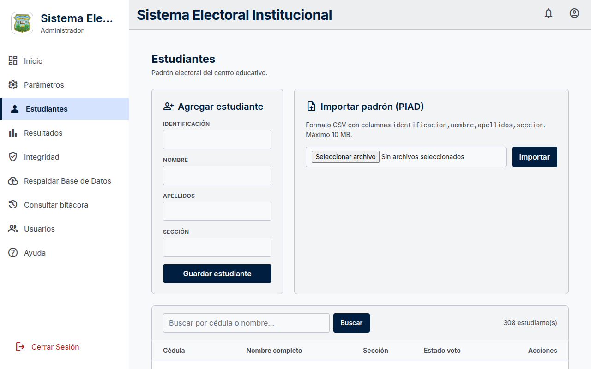
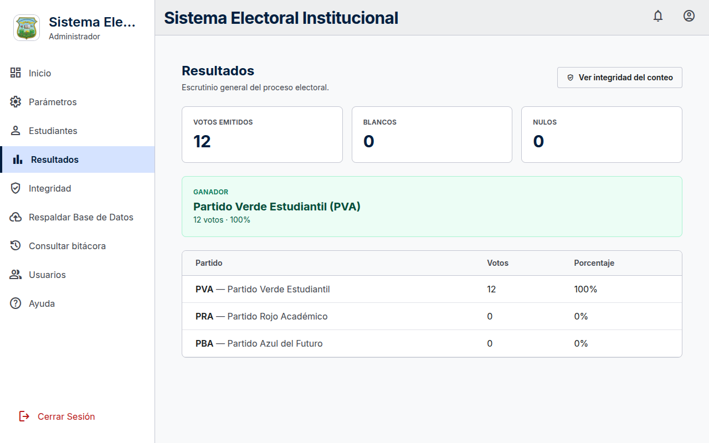
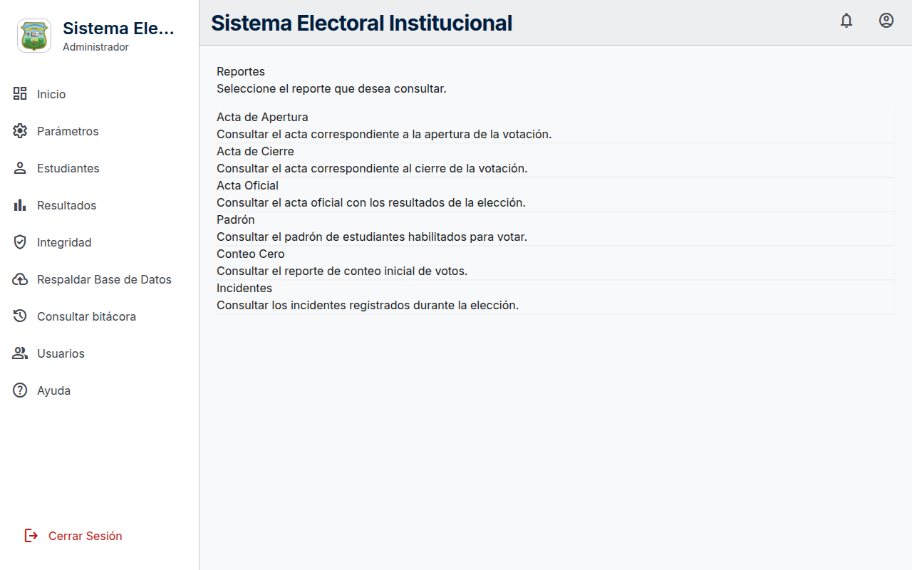
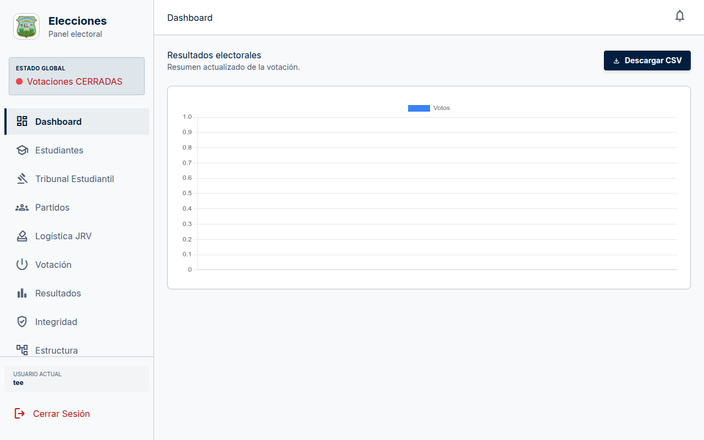

PC1 · Registro del votante.

PC2 · Junta Receptora: cola y urnas.
Sistema Electoral Estudiantil · CTP AIRA, Pedregoso
Explicación sencilla para el Tribunal Electoral · 4 de noviembre de 2026
98 %
Sí sirve, y está listo para una prueba con estudiantes. El ciclo completo funciona: un estudiante se registra en una computadora, la Junta lo aprueba en otra y vota en una tercera. El voto queda guardado y protegido. El servidor local ya tiene base de datos PostgreSQL, HTTPS, WebSocket, respaldos automáticos y reglas de acceso por mesa. Solo falta confirmar la matrícula real del colegio.
| Función | Estado | Qué significa en palabras simples |
|---|---|---|
| Registrar al votante (PC1) | FUNCIONA | Se digita la cédula y se envía la solicitud a la Junta. |
| Aprobar al votante (PC2) | FUNCIONA | La Junta ve la fila en vivo, acepta y le dice a qué urna ir. |
| Votar (PC3) | FUNCIONA | La urna muestra los partidos, el estudiante elige y confirma. |
| Avisar que ya votó (PC1) | FUNCIONA | La primera computadora se entera en menos de un segundo. |
| Impedir el doble voto | FUNCIONA | La base de datos no permite dos votos del mismo estudiante. |
| Resultados y ganador | FUNCIONA | Se ven los votos por partido, blancos y nulos. |
| Actas y reportes | FUNCIONA | Padrón, actas, carteles e incidentes listos para imprimir. |
| Integridad del conteo | FUNCIONA | Si alguien altera un voto, el sistema lo detecta. |
| Sin internet | FUNCIONA | Todo está en el equipo: no depende de la nube. |
| Importar padrón (Excel/CSV) | FUNCIONA | Se carga la lista del colegio y se valida. |
PC1 · Registro del votante.
PC2 · Junta Receptora: cola y urnas.
| Computadora | Qué hace | Pantalla |
|---|---|---|
| PC1 — Registro y servidor | Guarda todo y registra al estudiante con su cédula. | /registro |
| PC2 — Junta Receptora | Revisa la solicitud, la aprueba y asigna una urna libre. | /jrv |
| PC3 — Urna | Muestra la papeleta y guarda el voto. | /kiosko |

PC1: solicitud enviada.

PC2: solicitud aprobada.

PC3: papeleta lista.

PC1: confirma que el voto se guardó.
| Punto | Estado | Detalle |
|---|---|---|
| Contraseñas de prueba | HECHO | Se generaron contraseñas nuevas; están en un archivo privado del servidor. |
| Modo producción | HECHO | El sistema ya no muestra errores internos. |
| Certificado HTTPS | HECHO | La conexión está cifrada; el certificado debe instalarse en las 3 computadoras. |
| Base de datos PostgreSQL | HECHO | Instalada y probada con aislamiento por mesa (RLS). |
| Servidor web | HECHO | Apache con HTTPS sirviendo la aplicación. |
| Respaldos automáticos | HECHO | Respaldo diario cifrado a las 22:00. |
| Reglas de acceso (RLS) | HECHO | Cada Junta solo ve su mesa; los votos no son visibles. |
| WebSocket en vivo | HECHO | Servicio local activo, con respaldo automático si se cae. |
| Matrícula real del centro | PENDIENTE | Solo para decidir cuántas urnas usar. |
| Foto/huella del votante | OPCIONAL | No se usa; se puede eliminar o dejar para después. |
| Aspecto | Estado | Detalle sencillo |
|---|---|---|
| Contraseñas | BIEN | Se guardan encriptadas con un algoritmo moderno (Argon2id). |
| Acceso por rol | BIEN | Admin, Tribunal y Junta ven solo lo que les corresponde. |
| Acceso por mesa | BIEN | Una Junta no puede ver ni registrar estudiantes de otra mesa. |
| Voto secreto | BIEN | El partido votado se guarda cifrado. |
| Doble voto | BIEN | La base de datos lo bloquea, no solo la pantalla. |
| Programas actualizados | BIEN | Se corrigieron 23 fallas de seguridad conocidas. |
| Cabeceras de seguridad | BIEN | El navegador recibe instrucciones que bloquean ataques comunes. |
| Archivos CSV | BIEN | No se pueden colar fórmulas maliciosas en Excel. |
| RLS en la base de datos | BIEN | Probado con PostgreSQL 16: cada Junta solo ve su mesa y los votos no son visibles. |
Se instaló PostgreSQL en un contenedor y se aplicaron las reglas de aislamiento (RLS). El resultado:
| Quién consulta | Estudiantes | Urnas | Votos | Solicitudes |
|---|---|---|---|---|
| Junta de la mesa 1 | 4 (solo su mesa) | 1 (la suya) | 0 (no puede ver votos) | 1 |
| Junta de la mesa 2 | 4 (solo su mesa) | 1 (la suya) | 0 | 0 |
| Administrador | 8 (todas) | 3 (todas) | 1 | 1 |
Si alguien intentara leer datos de otra mesa directamente en la base, PostgreSQL devuelve cero filas. El ciclo completo de las tres computadoras también se ejecutó sobre PostgreSQL sin errores.
Se hicieron pruebas con hasta 100 votos simultáneos.
| Prueba | Resultado |
|---|---|
| 300 votos seguidos | 100 % exitosos, sin errores |
| Velocidad máxima | ~35 votos por segundo |
| Memoria usada | 68 MB (muy poco) |
| Computadora | Cualquier equipo moderno del colegio |
Un colegio con 600 estudiantes y 4 urnas vota en menos de 4 horas. El sistema puede atender unas 750 veces más votos por segundo de los que realmente se necesitan.

Entrada al sistema.

Panel del administrador.

Padrón de estudiantes.

Resultados y ganador.

Integridad del conteo.

Reportes y actas.

Panel del Tribunal.

Activación de la urna.
Los detalles técnicos completos están en docs/produccion/informe-produccion.pdf.
Las capturas y resultados de las pruebas están en docs/produccion/.